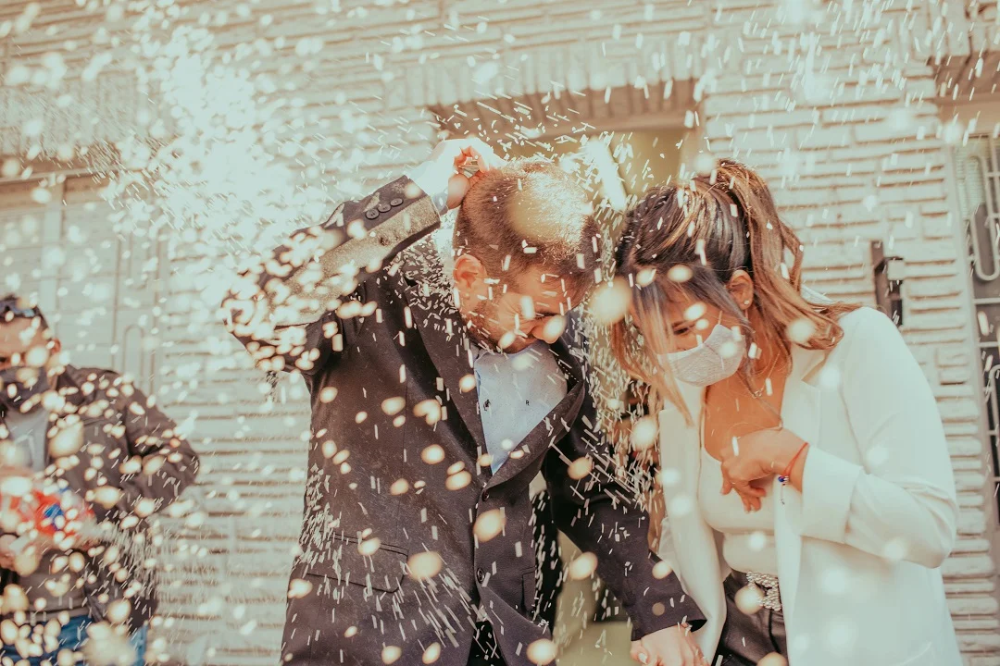
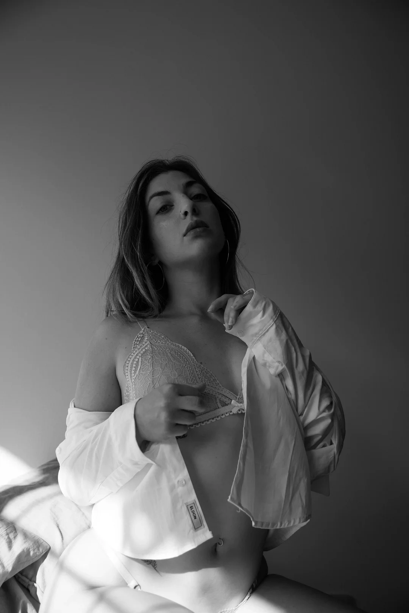

Servicios de fotografias y su historia
Fotografia de BodasLa fotografía de bodas generaba un enorme interés en esta profesión. Y es que, por suerte, los tiempos han cambiado, lo que antes era un mero sustento que a algunos hasta les daba verguenza reconocer, se ha convertido en una disciplina admirada y laureada. La creatividad y el buen hacer de quienes se dedican a la fotografía de bodas han logrado que muchas personas aficionadas pongan la mira en este sector para lanzarse profesionalmente, o que fotógrafos de otros sectores se sientan atraidos por esta disciplina para ampliar su línea de negocio. Lo primero que diría es que documentar una boda es una enorme responsabilidad. Por encima de todo. Una boda es un evento tan especial y único que fallar se convierte en una catástrofe. Para la pareja (y el recuerdo con el que se quedan de uno de los días más importantes de su vida) y para tu reputación como fotógrafo. No es una sesión de retrato que puedes repetir cuando quieras. Es una boda que (con suerte) ocurre sólo una vez en la vida de los protagonistas, por lo que en la fotografía de bodas no hay una segunda oportunidad para hacerlo bien. Por este motivo yo como profesional eligo trabajar con equipo especial que me permite hacer un backup al momento que tomo una fotografia, para que asi pueda tener la certeza de que nada del material se perdera por cualquier situacion que se pueda llegar a dar en el momento.
Para quien le gusta la fotografía tanto como apreciar la naturaleza o un paisaje urbano, la fotografía de paisaje es ideal. La fotografía de paisaje no sólo tienes fines artísticos, sino que ayuda a la conservación de un hábitat natural y nos da una nueva perspectiva de la ciudad en la que vivimos. Por lo que es muy importante conocer de qué se trata este concepto. Si buscamos un definición de fotografía de paisaje podemos decir que se trata de la toma de fotografías basada en un espacio, natural o urbano. Y este espacio es el protagonista de la foto. A diferencia de otro tipo de imágenes, basadas en personas, este se basa en la foto de un paisaje natural o no.
El boudoir es un tipo de fotografía femenina en lencería en la que prima la elegancia y la sensualidad de la mujer por encima de todo. En la fotografía boudoir se busca insinuar más que enseñar, que las fotos sean muy femeninas y transmitan mucha sensualidad. La línea es muy delgada, pues como hablamos, han de ser fotos sensuales pero no sexuales, por lo que la elegancia de la mujer fotografiada y el buen criterio del fotógrafo es esencial.
